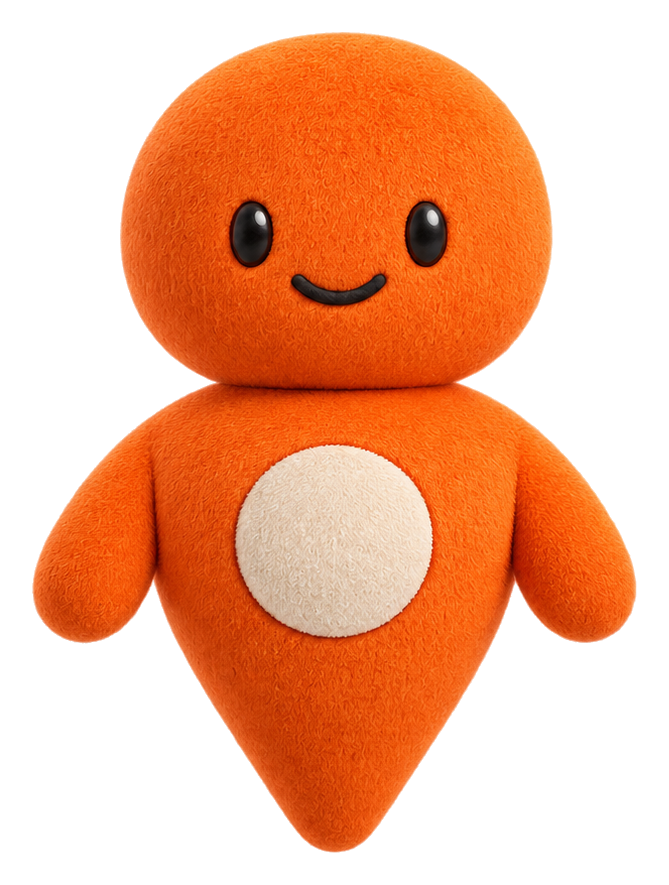

El anfitrión cercano: reconoce, invita y agradece.
VecinoClub · exploración de mascota01 / 06

Nombre de trabajo: PuntoUna señal
Una señal
de que eres
de aquí.
El pin del logo cobra vida para celebrar cada vuelta al comercio del barrio.
Juntos en lo localAmbiente ilustrativo · referencia canónica en hoja de modelo
Amable · local · optimista · sencilla · confiable.
Actitud infantil, urgencia falsa, poses humanas y accesorios que tapen el pin.
El sitio dice “Fidelizar es agradecer a quien vuelve”. Mecánica: QR en mostrador → tarjeta en el celular → sellos o puntos por compra → “Te faltan 2 compras” → canje. Referencias: funciona la calidez y variedad emocional; fallan las piernas, paletas ajenas y cambios de cuerpo entre escenas.
Hoja de modelo · origen en el isotipo02 / 06
Construcción
El cuerpo es el pin.
Cabeza circular, cuerpo de gota con punta redondeada y sello marfil. Los brazos son cortos y secundarios. El cuerpo termina en una sola punta continua.
Frentedos ojos · sello centrado
Tres cuartosvolumen y sello en perspectiva
Perfilun ojo · una punta inferior
La vista frontal es la referencia canónica; tres cuartos y perfil forman su juego de vistas. Son dirección visual; requieren redibujo vectorial común para producción. La luz y textura del raster crean tonos derivados, aunque la paleta plana de marca conserva los HEX oficiales.
Expresiones · estados del producto03 / 06
Una reacción con motivo
Cada gesto tiene uso.
Ocho caras generadas desde la misma cabeza maestra. La interfaz decide cuándo aparece cada gesto; el texto comunica el estado.
Zona variable propuesta: ojos, cejas, boca y brazos. Zona fija en producción: cabeza, cuerpo, sello y punta. La hoja raster actual aún no permite verificar una superposición pixel a pixel.
Versatilidad · misma anatomía04 / 06
Poses
Se mueve sin caminar.
Saluda, celebra y acompaña con los brazos. La acción surge de la expresión y el encuadre; la punta sigue siendo una sola pieza.
SaludaAlta al club · bienvenida
CelebraSello ganado · premio listo
AcompañaProgreso · vuelta al local
Dos niveles de detalle
Render con textura para campañas; reducción vectorial del pin para 16/32 px y una tinta.

Aplicaciones · recorrido real05 / 06
Puntos de contacto
Del mesón al celular.
El personaje acompaña la acción. El QR, el beneficio y el progreso siguen siendo lo primero que se lee.
QR de mostrador
“Escanea y únete al club”. Foto de contexto de una exploración anterior; anatomía canónica en la hoja de modelo. QR de muestra, no escaneable.
Escanea
y suma
y suma
Tarjeta de sellos
✓✓✓✓✓✓78
Seis sellos de ocho; el progreso se entiende sin la mascota.
Pantalla del cliente
Te faltan 2 compraspara tu café gratis
Tu tarjeta,en tu celular.
Estado concreto del programa local.
Sticker WhatsApp
Respuesta agradecida después de una visita.
Favicon y sello
La silueta
recuerda al logo.
recuerda al logo.
En tamaños mínimos se elimina la cara y se usa el isotipo.
Verificación · límites de la propuesta06 / 06
Control ejecutado
Qué quedó probado.
La exploración ya muestra un personaje y aplicaciones. Su conversión a sistema vectorial final requiere dibujo y revisión humana.
Marca y legibilidad
HEX planos comparados con los SVG oficiales: naranja #FB7629, marfil #F5F4F2, tinta #171717. Sin color adicional en CSS/SVG de marca.
Tinta / marfil
16,31:1
16,31:1
Tinta / naranja
6,60:1
6,60:1
Marfil / tinta
16,31:1
16,31:1
Naranja / tinta
6,60:1
6,60:1
Texto y elementos clave superan 4,5:1. El naranja sobre marfil da 2,47:1: se evita en texto. Los brillos y sombras del render son raster y no cuentan como HEX planos.
Silueta · 16/32 px · una tinta
Consistencia y pasos con terceros
Inspección visual: frente, tres cuartos, perfil, ocho caras y tres poses mantienen una sola punta inferior; no se ven piernas ni pies. Las ocho caras comparten hoja y proporción. Una superposición exacta entre renders no es verificable: la perspectiva y la generación alteran píxeles. El cuerpo maestro vectorial se debe cerrar en redibujo.
- INAPI: búsqueda fonética y figurativa de nombre y personaje.
- Imagen inversa: Google Lens y TinEye sobre silueta, cara y render.
- Test de 5 segundos: 5–8 comerciantes y 5–8 clientes; aprobar si ≥4/5 reconoce la mascota y la asocia a cercanía/fidelización.
- Revisión ciega: diseñador externo evalúa originalidad, coherencia y escalabilidad.
Supuestos: “Punto” es nombre temporal; beneficios y sellos dependen del comercio. Límite: esta salida generada puede no ser protegible. Redibujar el personaje como vector propio antes de registrarlo.